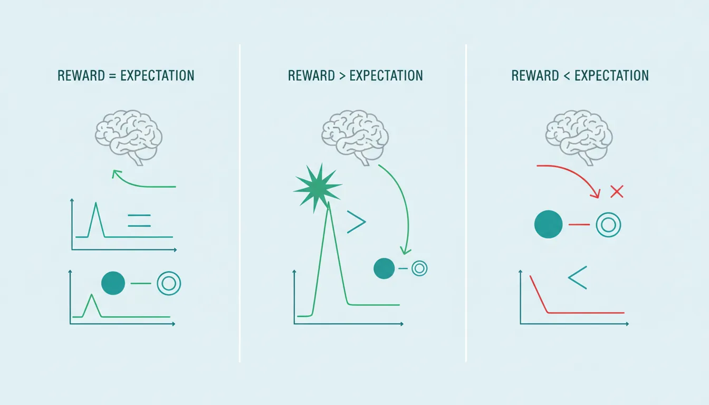
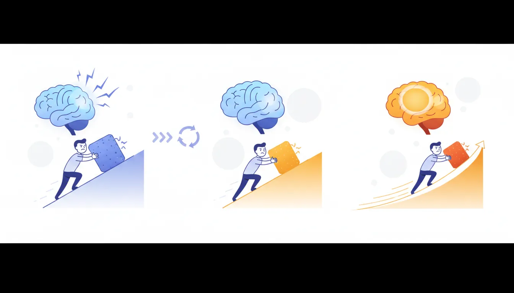
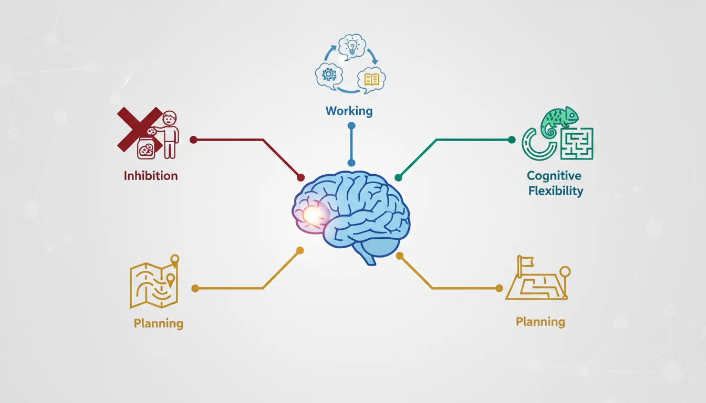
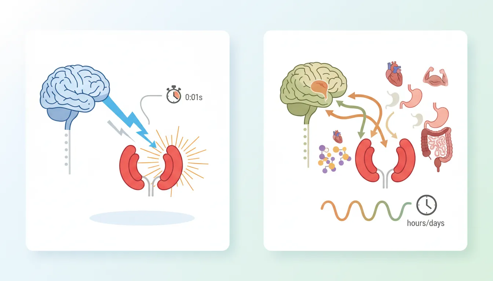
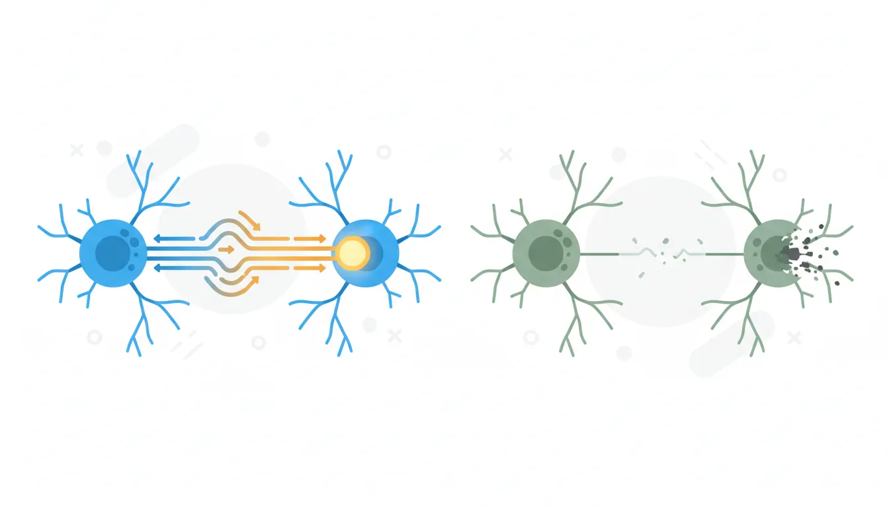

Brain and Behavior
Understanding the neuroscience behind behavior gives us deeper insights into why we act the way we do and how to design more effective interventions. In this ninth part of our series, we explore the brain-behavior connection.
Key Insight
The brain evolved to conserve energy—habits form because automated behaviors require less cognitive effort than deliberate decisions.
Behavioral Psychology Mastery
Foundations of Behavior
Core principles, conditioning, behavioral loopHabit Formation & Breaking
Habit loops, building & breaking habitsDecision-Making Psychology
Biases, dual-system thinking, behavioral economicsMotivation & Drive
Intrinsic vs extrinsic, theories, goal psychologyNudge Theory & Choice Architecture
Defaults, framing, behavioral designBehavior Change Models
COM-B, Fogg, transtheoretical modelSocial Influence & Persuasion
Conformity, authority, Cialdini's principlesPractical Applications
Personal, workplace, business, healthBehavioral Neuroscience Basics
Dopamine, stress, habit circuitryBehavioral Research Methods
Experiments, RCTs, field studiesApplied Behavioral Therapy
CBT, exposure therapy, reinforcementDopamine & Reward Systems
Dopamine is the brain's "learning signal"—not the pleasure chemical it's often called. It teaches the brain what's worth pursuing.

The Reward Prediction Error
| Scenario | Dopamine Response | Behavioral Effect |
|---|---|---|
| Unexpected reward | Large spike | "Do this again!" Strong learning |
| Expected reward (delivered) | No change (spike shifts to cue) | Maintains behavior |
| Expected reward (missing) | Dopamine dip below baseline | Disappointment, extinction begins |
| Cue predicting reward | Spike at cue, not reward | Anticipation drives behavior |
Key insight: Dopamine fires when things are better than expected, not when they're simply good. This is why novelty and surprise are so motivating.
Why Variable Rewards Are Addictive
Unpredictable rewards prevent the dopamine spike from fully transferring to the cue. The brain keeps anticipating, keeps seeking. This is why slot machines, social media feeds, and email notifications are so compelling—and so potentially harmful.
Dopamine and Motivation
Dopamine is more about wanting than liking:
- Wanting (motivation): Dopamine-driven; creates the urge to pursue
- Liking (pleasure): Opioid-driven; the actual enjoyment experience
- Dissociation: Addicts often want drugs intensely without liking the experience anymore
Habit Circuitry (Basal Ganglia)
The basal ganglia—deep brain structures—are the brain's habit engine, automating frequently repeated actions.

The Habit Formation Process
| Stage | Brain Region | Experience |
|---|---|---|
| Learning | Prefrontal cortex (deliberate) | Effortful, requires attention |
| Practice | Transition zone | Getting easier, still aware |
| Automatic | Basal ganglia (habitual) | Effortless, often unconscious |
Chunking
How Habits Become Automatic
The basal ganglia package complex action sequences into single "chunks." Tying your shoes feels like one action, but it's actually 20+ steps. Once chunked, the entire sequence triggers from a single cue. This frees the prefrontal cortex for other tasks—explaining why you can drive home while thinking about dinner.
Prefrontal Cortex & Executive Control
The prefrontal cortex (PFC) is the brain's CEO—responsible for planning, impulse control, and deliberate decision-making.

Executive Functions
| Function | Description | When It Fails |
|---|---|---|
| Inhibition | Stopping automatic responses | Impulsive eating, outbursts |
| Working memory | Holding information in mind | Forgetting intentions |
| Cognitive flexibility | Switching between tasks/rules | Rigid thinking, perseveration |
| Planning | Anticipating and sequencing | Poor organization, short-sightedness |
Why Willpower Fails
The PFC Is Resource-Intensive
- High glucose demand: Self-control depletes glucose reserves
- Fatigue vulnerability: Executive function declines throughout the day
- Stress impairment: Cortisol reduces PFC functioning
- Sleep critical: Even mild sleep deprivation impairs the PFC
Implication: Don't rely on willpower—design environments and build habits that don't require it.
Stress Neurobiology
Stress profoundly affects behavior by shifting brain function from deliberate to automatic.

The Stress Response
| System | Time Course | Effect |
|---|---|---|
| Sympathetic-Adrenal (Adrenaline) | Seconds | Fight/flight, heart rate, alertness |
| HPA Axis (Cortisol) | Minutes to hours | Sustained stress response, memory modulation |
Stress and Habits
Why Stress Makes You Fall Back on Old Habits
Cortisol suppresses the prefrontal cortex and enhances the basal ganglia. Under stress, deliberate control weakens while automatic habits strengthen. This is why stressed people revert to old behaviors (smoking, overeating, nail-biting) even when trying to change.
Neuroplasticity
The brain isn't fixed—it changes with experience. This is both the challenge (bad habits wire themselves in) and the hope (new patterns can be built).

How Neuroplasticity Works
| Principle | Meaning | Application |
|---|---|---|
| "Neurons that fire together wire together" | Repeated co-activation strengthens connections | Consistent practice builds neural pathways |
| "Use it or lose it" | Unused connections weaken | Old habits fade if not reinforced |
| Critical periods | Some windows are more plastic | Early intervention is easier but change is always possible |
| Attention required | Mindless repetition is less effective | Deliberate practice accelerates learning |
Practical Implications
Understanding neuroscience helps design better behavioral interventions:
Neuroscience-Informed Strategies
| Brain Fact | Strategy |
|---|---|
| Dopamine fires for unexpected rewards | Use variable rewards to maintain engagement |
| Habits free up cognitive resources | Build good habits so willpower isn't needed |
| PFC tires throughout the day | Make important decisions early; reduce evening temptations |
| Stress impairs deliberate control | Have pre-made plans; don't rely on in-the-moment choices |
| The brain is plastic | It's never too late to change, but consistency is key |
Practical Exercise: Energy Management
Try This
Design your day around your brain's limitations:
- Track when your willpower is strongest (usually morning)
- Schedule challenging behaviors for high-energy times
- Reduce decisions needed in the evening
- Plan for stress: what will you do when the PFC goes offline?
- Build habits so good behavior doesn't require willpower
Conclusion & Next Steps
You've now learned the neuroscience behind behavior:
- Dopamine: The learning/motivation signal, responds to prediction errors
- Basal ganglia: Automates habits through "chunking"
- Prefrontal cortex: Deliberate control—powerful but fatigable
- Stress: Shifts control from PFC to habitual systems
- Neuroplasticity: Change is always possible with consistent practice